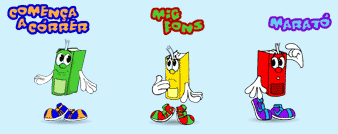
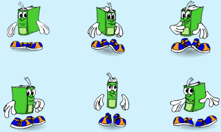

"Entrena't per llegir" és un projecte d'entrenament lector. S'hi pot treballar individualment des de casa o des de l'escola atenent als diferents ritmes d'aprenentatge. Objectius Aquest material està constituït per un seguit d'activitats relatives al procés de descodificació i de comprensió lectora. Es pretén: • Aportar una sèrie d'exercicis sistematitzats i seqüenciats que complementin el treball de lectura que es realitza a l'escola. • Potenciar en els alumnes habilitats lectores: Entrenant la conducta ocular dins d'un àmbit significatiu. Activant els coneixements previs del tema escollit. Facilitant l'ampliació de vocabulari. • Motivar els nens i les nenes per millorar la seva competència lectora utilitzant un programa informàtic amb material interactiu, prou atractiu i lúdic, ajustat al seu nivell de lectura.  |
||
Característiques del material • El material d'entrenament lector "Entrena't per llegir" està estructurat i seqüenciat en tres blocs, anomenats "comença a córrer", "mig fons" i "marató". Cada bloc està format per sis unitats, actualment n'hi ha tres d'actives. • Dins de cada unitat hi ha sis grups d'activitats diferents. Cadascuna està identificada amb una icona que es va repetint en totes les unitats, només canvia el color del llibre. • En acabar algunes activitats, s'hi pot comprovar la seva eficàcia en l'entrenament lector: pujant a un pòdium, obtenint medalles o copes o bé passant de llarg. Altres són autocorrectives (no deixa posar la lletra si està malament, etc.). Sempre es poden repetir les activitats per tal de millorar el resultat final. |

| Component
del procés lector. Habilitats per desenvolupar. |
Activitats |
|||
|
D |
Agilitat visual: Gimnàstica ocular |
Fes gimnàstica amb els ulls |
|
|
Ampliació camp visual: Gimnàstica significativa |
Lectura de sèries de paraules, grups de paraules i frases. Es presenta la paraula, grup de paraules o frase, aquesta desapareix i l'han d'identificar de tres possibles. |
|||
Agilitat visual: Cognició global |
Troba la paraula |
Completar paraules. Separar paraules / frases enganxades. Formar paraules a partir de lletres desordenades. Trobar una paraula dins d'una altra. Formar paraules a partir de síl·labes Trobar la paraula sobrera. Substituir dibuixos per paraules. Mots encreuats.... |
||
Agilitat visual: Atenció visual |
Fixa la vista |
Comptar paraules o imatges repetides. Identificar imatges idèntiques. Trobar les diferències entre dues imatges. Aparellar paraules. Situar parts en una imatge. "Puzzle" |
||
Ampliació camp visual: fixacions |
Quant trigues a llegir-ho bé? |
Lectura cronometrada de llistes de paraules o textos disposats de formes diferents: Triangles: lectura de dalt a baix fent una sola fixació i en línia recta vertical. Dues columnes: lectura fent una sola fixació per columna i línia. Lectura marcant la síl·laba tònica... |
||
Memòria: MCT Retenció i retenció ordenada |
Fes memòria |
Donada una imatge, retenció de detalls: Identificació d'objectes o fotografies. Reconeixement de canvis respecte la imatge inicial. Identificació de paraules relacionades amb aquesta. Retenció de l'ordre d'aparició de paraules. Joc "Memory"... |
||
| C O M P R E N S I O |
Comprensió literal, interpretativa, síntesi i crítica |
Llegeix |
Comprensió utilitzant tipologies i àrees diferents per: Seguir unes instruccions. Solucionar preguntes de múltiple resposta. Relacionar descripcions amb els dibuixos Identificar el significat d'una paraula a partir del context. Relacionar subtítols amb paràgrafs d'un text... |
|